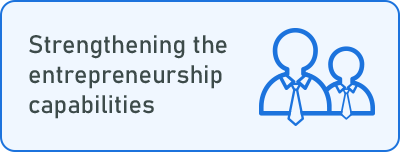

IProject for invigorating ICT-based Innovation and Entrepreneurship /
Proyecto para fortalecer el emprendimiento innovador basado en TICs
Project period
Project Purpose
2018 ~ 2023
Strengthen ICT- based innovative entrepreneurship and the competitiveness of Peru through the National Innovation System
Participating institutions
KOICA is the head of this project in Korea.
KOICA supports the budget and sets the project direction.
The PM team/agency is in charge of performance management. And the Project Contractors operate the project.
CONCYTEC and APCI are the head of the project in Peru. Universities in Peru operate the project with the Project Contractors.
Experts will be dispatched from Korea to Peru to support the project.
Project Components
This project consists of three components :

Fitst, step is establishing the C-Innovacion, building online and offline infrastructure, and developing program contents.
Second, we strengthen entrepreneurship by holding training courses and dispatching experts for mentorship
Third, we create opportunities for university labs and startups through advising and acceleration.
Lastly, we will hold a startup festival to share the progress and innovation that’s been made over the past year.
Programs in Project
Medium and long-term Strategy
This is our Strategic theme for the project in the long term. There are two axes of expansion: internal and external. Internally, the program expands to the different regions of Peru and participating institutions. This is the main scope of our project. But externally, in the long term, the program may expand to other countries of Latin America. The vision is to assist in creating a sustainable ecosystem for innovation and entrepreneurship of Latin America.
Plan of National Innovation Network
This is the general structure of the National Innovation Network. NIN system promotes communication and collaboration of the involved institutions. In addition, it facilitates regional expansion through subsequent sites.
- National Innovation Network = Central + Southern + Northern
- Node = Site 1 + Site 3 + Site 4
- Site = Lab(EL, PI, IM) + Startup
9 Universities in Peru as Cuerpo de innovación
C-Innovacion consists of nodes and sites. The node is a regional hub, and sites are organizations that work by connecting nodes. Nodes and Sites work like the hub and spoke to operate programs in cooperation. We established C-Innovacion in Six universities in Lima and Arequipa last year. And these three in the northern region were established on March this year
Organization and role of Cuerpo de innovación
The organization and roles of each department of the C-Innovacion is shown here. The C-Innovacion is divided into 2 main departments: Dept of tech and the Incubator Center. The Dept of Technology oversees the lab to market process. And the Incubator Center supports acceleration for startups.
Role and Responsibility of Node and Site
Here are specific roles and responsibilities of Nodes and Sites. Since Nodes are regional hubs, they are in charge of developing and operating programs, in addition to expanding internally and externally. Each of the Sites discovers university labs and startups, and support programs operated by the Node.
-
Establishment and operation of regional innovative startup ecosystem
-
C-innovacion / Accelerating programs
-
Operation of TTT (May & TTA (June) programs
-
Develop and disseminate certificate training courses for entrepreneurship experts
-
Spread innovative startup programs within universities, government funded institutions, other universities in Peru and Latin America
-
Establishment and operation of mentoring program